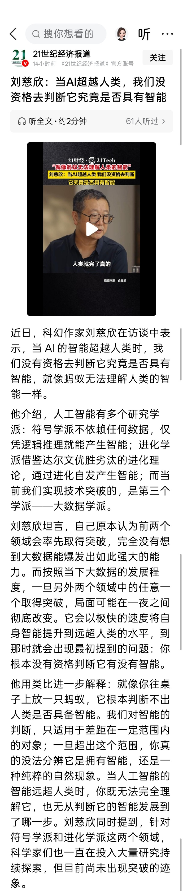
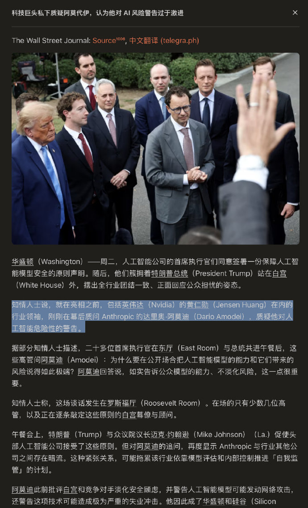
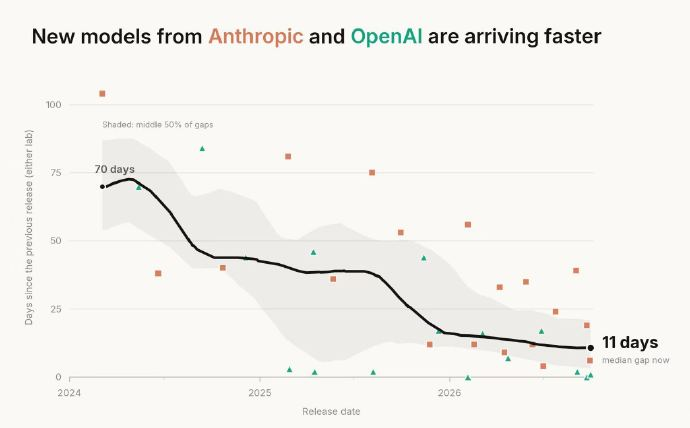
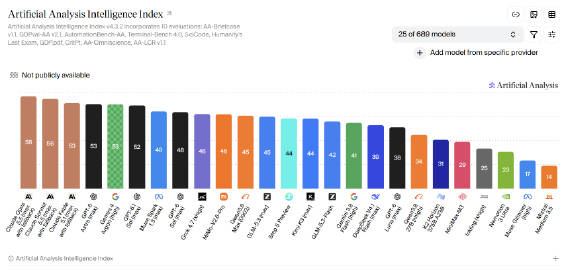
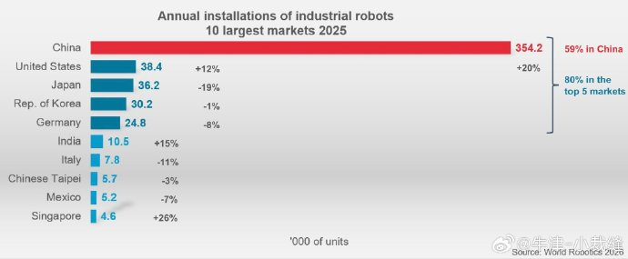
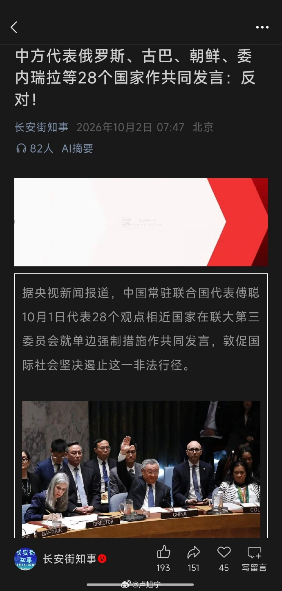
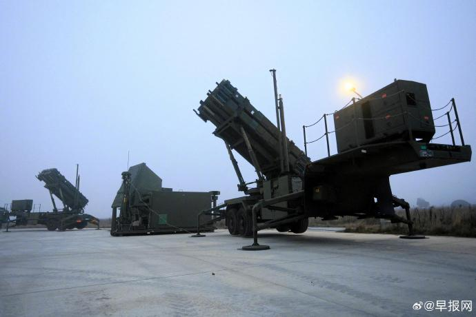

X晚报 · 每日 20:00 更新
X晚报 · 2026年10月2日
2026年10月2日 · 首期 · 数据截至 20:00（胡志明时间）
今晚看点：非农大爆冷打掉加息预期 · 刘慈欣谈AI智能之问 · 特朗普放话选后或升级对伊打击
🌙 X图卦 · 当AI超越人类
【22】刘慈欣：当AI超越人类，我们没资格去判断它究竟是否具有智能。
他打了个比方：就像你往桌子上放一只蚂蚁，它根本判断不出人类是否具备智能。我们对智能的判断，只适用于差距在一定范围内的对象；一旦超出这个范围，你真的没法分辨它是拥有智能，还是一种纯粹的自然现象。当人工智能的智能远超人类时，你既无法完全理解它，也无从判断它的智能发展到了哪一步。

【23】根据华尔街日报报道，包括英伟达（Nvidia）的黄仁勋（Jensen Huang）在内的行业领袖，在白宫 AI 峰会的幕后质问 Anthropic 的达里奥·阿莫迪（Dario Amodei），质疑他对人工智能危险性的警告。

【18】GPT 的寿命越来越短，意味着什么？

【24】Gemini 4 Argon的跑分还不错，和GPT-6 Astra打平了，不过整个AA竞技场现在Top 3又被A/给包圆喽⋯⋯

【3】工业机器人在中国的应用远超其他经济体（2025），客观上反映了中国工业的自动化程度。

【6】9月30日，国内多家品牌金饰价格较昨日上调。每克报价较前一日上涨12元至14元不等，价格集中在1260元/克附近。（央视财经）
【5】节假日电车长途出行大痛点：充电有人等5个小时才充上，有服务区超200辆车排队
【1】中方代表俄罗斯、古巴、朝鲜、委内瑞拉等28个国家作共同发言：反对

【11】美国向中东部署更多爱国者系统保护油气设施

【15】特朗普单方面宣布韩国投资阿拉斯加LNG韩方：尚未拍板

✨ X网精彩
特朗普：中期选举后或升级对伊打击，批美联储加息
特朗普在媒体采访中表示，中期选举后恢复对伊朗轰炸是有可能的；同时抨击美联储不断加息非常糟糕，为美联储主席沃什辩护，把借贷成本上升归咎于前任政府任命的官员。
AI热潮顶住债市风暴，美股期货重拾涨势
美光财报提振下日经225劲升3.3%，纳指期货涨约0.8%；美国10年期国债收益率触及2002年以来高位后微降至5.29%，英国30年期突破6%后回落。
苹果 Apple Music 安卓 7.0 测试版，液态玻璃首入安卓端
9to5Google 报道，苹果向安卓平台发布 7.0 测试版 Apple Music，液态玻璃设计语言在 iOS 推出一年后首次进入安卓端，新版采用悬浮式底部栏。
🌃 X 晚间精选
美国9月非农大爆冷：新增2.9万 vs 预期8.9万，失业率升至4.2%
8月数据还被下修2.9万，为2026年第三弱的就业报告；7、8两月合计比初值低6万。
市场不再计价年内一次完整加息
非农爆冷后，Fed-dated swaps 不再 price in 今年一次完整的加息。
美国政府利息支出占收入18.5%，创历史新高
美国政府现在要用总收入的18.5%来支付债务利息，历史最高纪录。
特斯拉Q3交付48.65万辆，超华尔街预期
同比-2%，但高于预期的46.2万；Q3储能装机13.7 GWh。
法国骚乱发酵，勒庞胜选赔率飙升
骚乱持续，勒庞的选举赔率大幅走高，马克龙压力山大；法德10年期利差逼近欧债危机时期高点。
教皇：在AI时代，区分人类艺术与机器产出愈发紧迫
Gary Marcus 转发教皇表态：在人工智能时代，区分人类艺术和机器生产的东西正变得紧迫。
Paul Graham：第一件进入太空的人造物是什么？
他说自己此前从未明确想过这个问题——我们很少谈论这个里程碑。
日本内阁府公开征集AI社会实施中的监管障碍
内阁府、数字厅、经产省联合征集阻碍AI社会实施或效果不彰的规制制度信息，10月19-30日。
伊朗称一名IRGC成员死于路边炸弹
据伊朗国家电视台 IRIB 报道，一名伊斯兰革命卫队成员在路边炸弹袭击中身亡。
达拉斯联储 Logan：可能还需再加息至少50bp
与市场降温的加息预期形成对照，Logan 仍放鹰。
📡 话题新进展
美联储：非农爆冷 vs 官员放鹰，预期开始分化
9月非农仅新增2.9万、失业率4.2%，市场把年内加息预期基本打掉；但达拉斯联储 Logan 仍称可能还需再加50bp，特朗普则骂加息非常糟糕。数据、官员、白宫三方信号打架，10月议息前波动难免。
标签：美国 · 货币政策
AI之问：当智能远超人类，我们还有资格评判吗
刘慈欣抛出蚂蚁论：蚂蚁判断不出人类是否有智能，人对远超自身的智能同样无从判断。巧的是同一天，白宫AI峰会幕后，黄仁勋等行业领袖正围攻 Anthropic CEO 阿莫迪，质疑他渲染AI危险。评判权之争，从哲学烧到了生意场。
标签：AI科技
中国经济信号：金价1260元/克，工业机器人全球领跑
国内金饰价集中在1260元/克附近，较前一日上调12-14元；另一边，2025年中国工业机器人应用规模远超其他经济体，自动化程度客观领先。避险情绪与产业升级，同框出现。
标签：中国经济
中东：美军增兵 + 特朗普放话选后或升级打击
美国向中东增派爱国者系统保护油气设施、拟增派航母与万名军人；特朗普公开称中期选举后有可能恢复对伊朗轰炸。伊朗同日传出 IRGC 成员遇袭身亡，火药味渐浓。
标签：国际地缘
大厂：苹果液态玻璃设计首次登陆安卓
Apple Music 安卓 7.0 测试版采用液态玻璃设计语言——iOS 推出一年后首次进入安卓端。苹果的设计语言开始反向输出到竞品平台，值得玩味。
标签：科技大厂